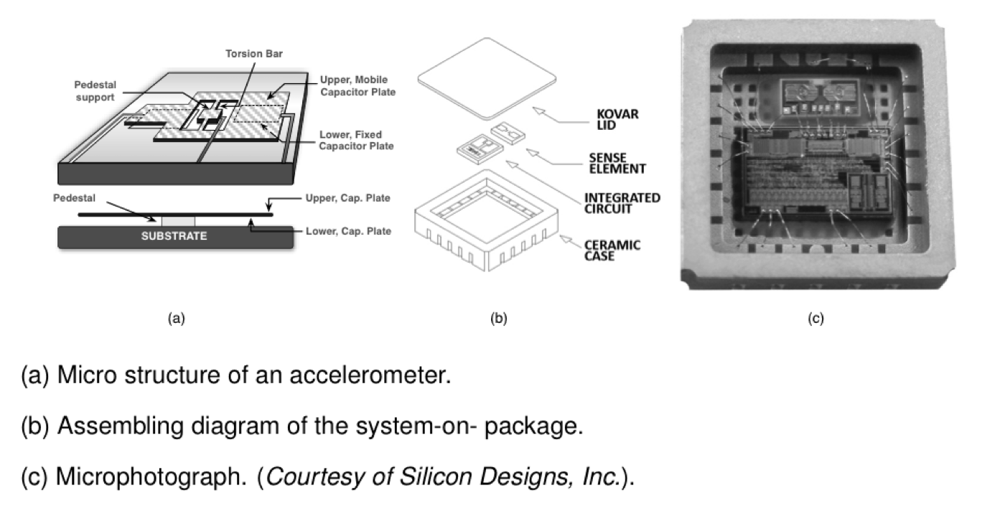
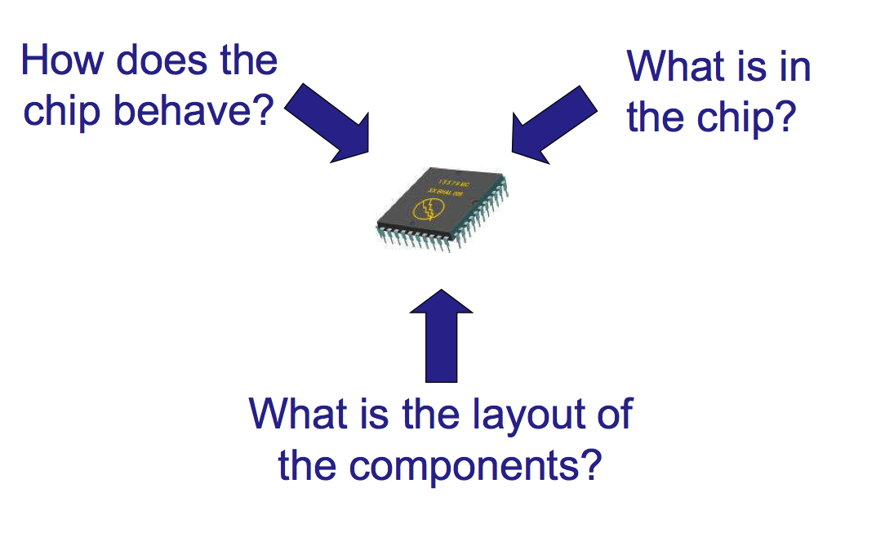
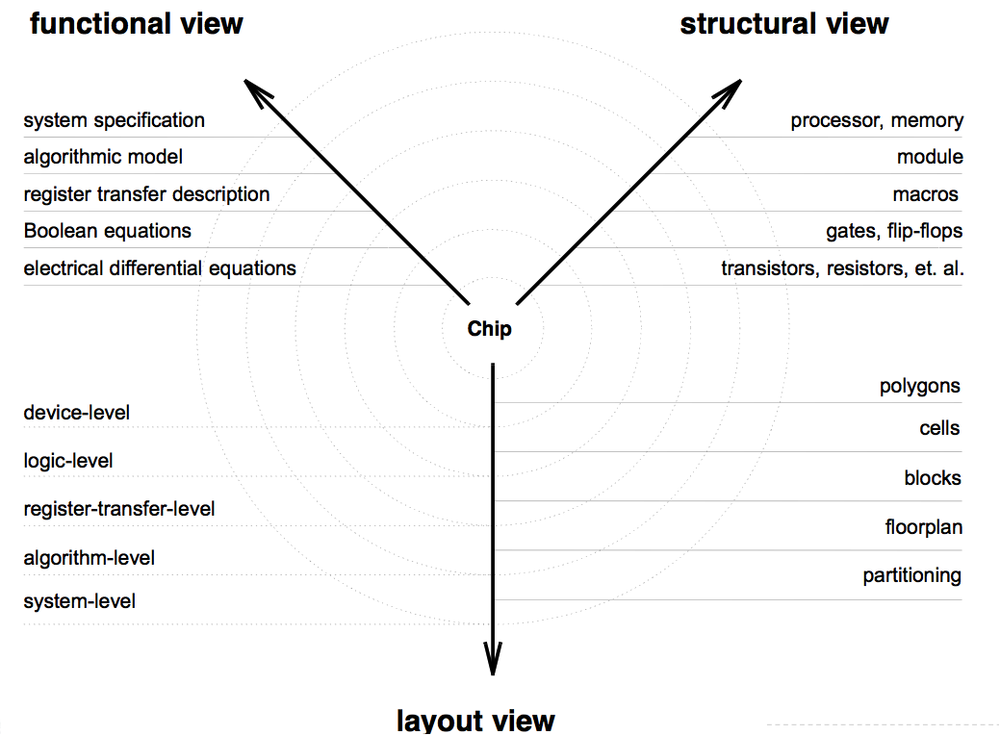
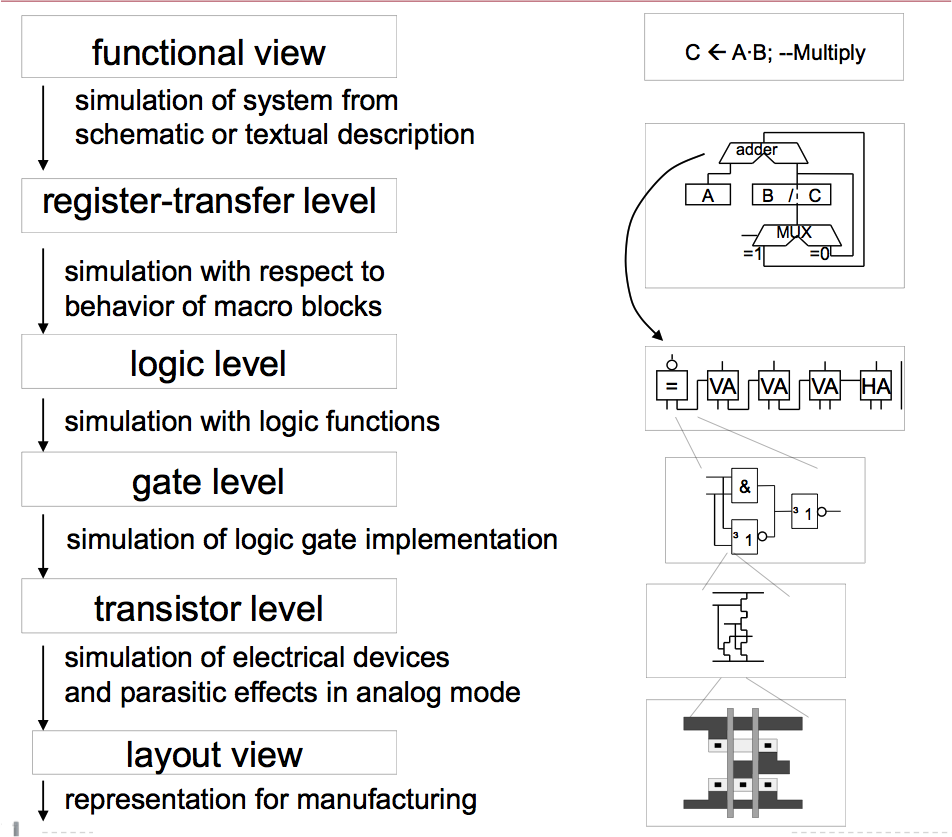
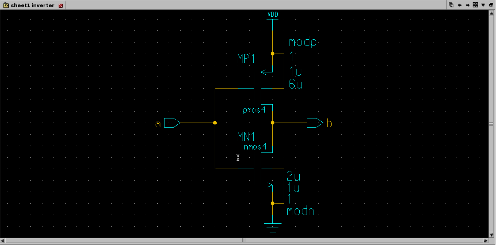
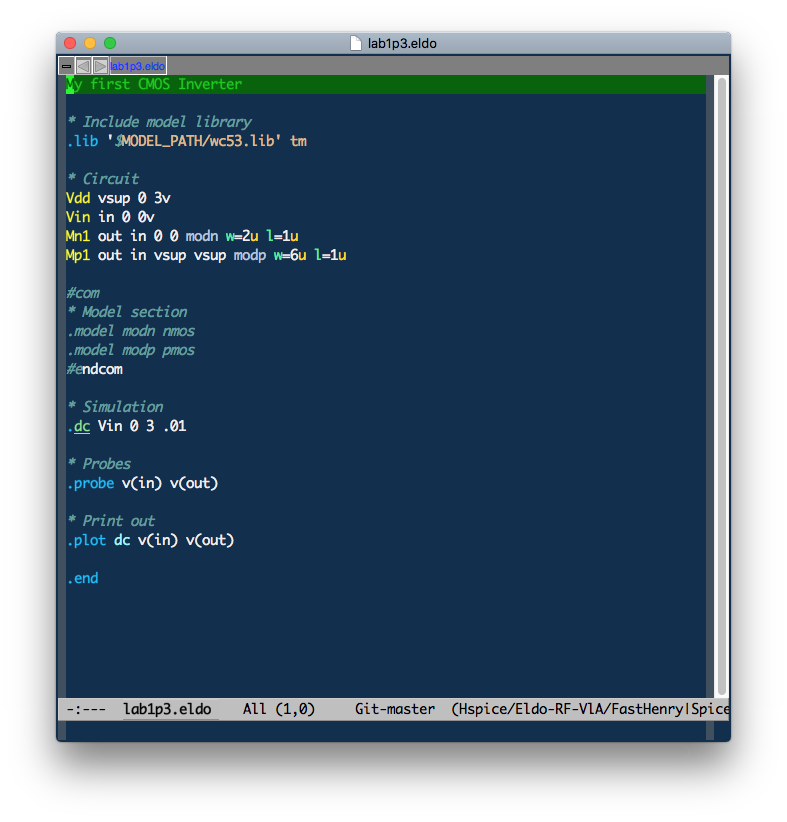
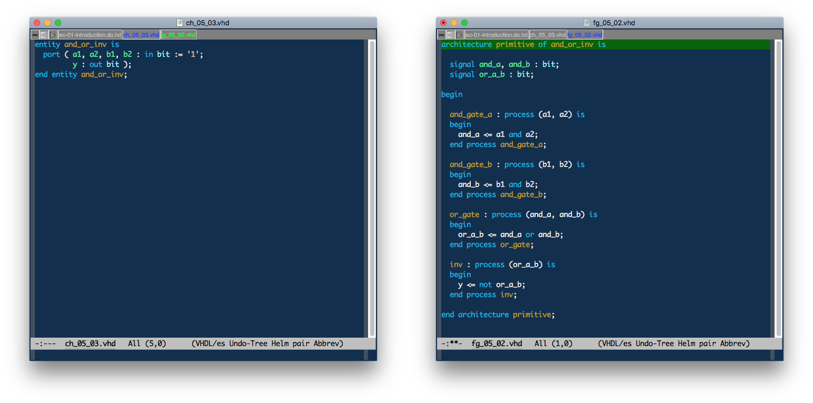
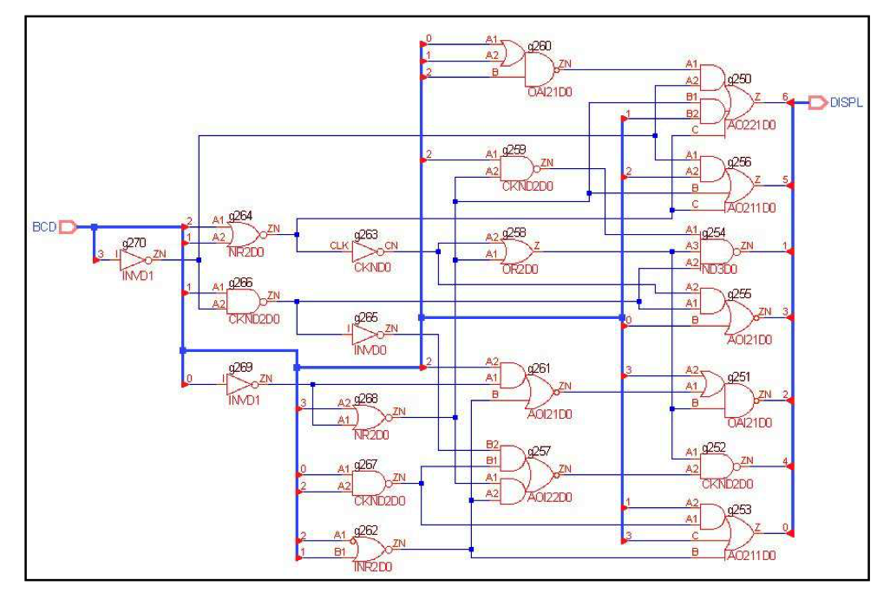

1 Einleitung und Übersicht
Im Modul M 6.9 Analoge Schaltungen (ANS), im Bachelorstudiengang (B.Eng.) Elektrotechnik (ET) der Fakultät 4 der Hochschule Bremen (HSB), werden aus der Theorie des Schaltungsentwurfs gewonnene Kenntnisse im Labor experimentell erprobt (ASLK Pro Experimente) und mit KiCAD als eigene PCB-Designs umgesetzt. Für die erste Erprobung von Schaltungen wird das ASLK (Analog System Lab Kit) Pro der Firma MikroElektronika eingesetzt.
Zur Simulation werden Schaltungssimulatoren wie LTSpice und ngspice verwendet.
Des Weiteren kommen die MATLAB Campus-Lizenz und Python als leistungsstarke Instrumente zur Modellierung und Verhaltensanalyse von Filtern- und Verstärkern beim Schaltungsentwurf zum Einsatz.
Für die Charakterisierung der Schaltungen stehen im Labor sechs Meßplätze mit gängigen Gerätschaften wie Quellen, Signalgeneratoren, Oszilloskopen und dem integrierten Meßlabors STEMlab von RedPitaya zur Verfügung.
1.1 Lernziele des Moduls
Ein tieferes Verständnis für das Verhalten von MOS-Elementen im analogen Schaltungsentwurf entwickeln und Ausblicke auf weiterführende Kurse im Master bekommen.
Funktionsprinzipien und Charakterisierung von MOS-Elementen
Fundamentale integrierte analoge Schaltungen
Operationsverstärker
Lernen, Grenzen und Tradeoffs analoger Schaltungen zu bewerten
Entwickeln eines systematischen Entwurfsstils, auch anwendbar für andere Ingenieursdisziplinen
Lernen, einen Schaltungssimulator für den Entwurf einzusetzen.
Technisch-wissenschaftliche Dokumentation
Konsoliderung der oberen Aspekte in Laborprojekten
1.2 Voraussetzungen des Moduls
Digitaltechnik
Grundlagen der Halbleiterbauelemente
Netzwerk- und Systemtheorie
Regelungstechnik
1.3 Wissenschaftliches Rechnen / Datenwissenschaft
1.4 Schaltungssimulation (SPICE)
1.5 Betriebssystem (OS) - Werkzeuge (Tools)
1.6 Code Editoren
- Visual Studio Code
- Notepad++ (Windows)
- Emacs
- Vim
1.7 Schreibst Du noch oder TeXst Du schon?
1.8 LaTeX Editoren
- IDE’s
- Kollaborative Frameworks
1.9 Literaturverwaltung und LaTeX
1.10 Labor
Anwendung unterschiedlicher Beschreibungsebenen
- Systemebene (Verhaltensmodell z.B. mit Matlab/Simulink oder Python)
- Schaltungsebene (SPICE)
- Charakterisierung (Messungen)
Analog System Lab Kit – ASLK Pro
Messautomatisierung Red Pitaya STEMlab 125-14/10
1.11 Data Science
- Arbeitsordner auf dem Rechner (sandboxing, virtualenv)
- Tabellenformat (ASCII, CSV)
- Exceldatei (.xlsx ) oder OpenDocument (.ods)
- Datenspeicherung in speziellen Formaten, z.B. Apache Parquet
- Datenanalyse mit Datenbanken, z.B. DuckDB)
1.12 Schaltungsanalyse/-entwurf \(\neq\) Black Magic
Schaltungsanalyse. * ist die Fähigkeit, Schaltungen in handhabbare Teile zu zerlegen * basierend auf einem einfachen, aber hinreichend genauen Modell * “Just-in-time” Modellierung: Verwende kein komplexes Modell, so lange es nicht benötigt wird! * eine Schaltung \(\Rightarrow\) eine Lösung
Schaltungsdesign/-entwurf. * ist die Fähigkeit der Schaltungssynthese auf Basis von Erfahrung und intensiver Analyse. * eine Spezifikation \(\Rightarrow\) viele Lösungen * Entwurfspraktiken werden am besten durch’s “Selbermachen” ausgebildet – “Machen ist wie wollen nur krasser.”
1.13 Schöne neue Welt

1.14 From Sand to Silicon (Infineon, Dresden)
1.15 FinFET (Intel)
1.16 TSMC Fab (Next Gen 7/5 nm)
1.17 Es war einmal …


1.18 Damals und heute


1.19 Systemhierarchie

- Nutzen Sie Hierarchien zur Beschreibung komplexer Systeme
- Teile und herrsche
1.20 System Assembly

1.21 Schnittstellen zur Aussenwelt

1.22 Meeting mit einem System

1.23 System in a Package (SiP)

1.24 Backend Phasen
- Packaging
- Zuverlässigkeit = Qualität auf Zeit
- Testing auf Wafer Level, known good die (KGD)
- Burn-in und Accelerated Aging (thermischer Stress, Arrhenius Gesetz)
- Automatic Test Equipment (ATE)
- System Probe
- Interconnect Test
- Build-in Self-Test (BIST)
- Statistische Datenanalyse und Yield Prognosen
- Ausfallrate FIT (failure in time)
- Badewannenkurve
1.25 Sie werden Experte
Leistungsmerkmale. * Hintergrundwissen * Systemverständnis, Architektur, Herstellungsverfahren, Implementation
- Unterbewusste Kompetenz
- Abgespeicherte Erfahrungen aus Erfolgsgeschichten und Misserfolgen
- Spezialwissen
- Berufsspezifisches Wissen
- Teamwork Haltung
- Kommunikationsfähigkeit, Berichtswesen und technische Präsentation
- Kreativität
- Tool-Kenntnisse
1.26 Evolution von Produkten
- Angetrieben durch Technologieverbesserung
- Kosten (größere Chips, geringere Größe der Merkmale, bessere Ausbeute)
- Leistung (neue Bauteile, höhere Geschwindigkeit, weniger Stromverbrauch)
- Angetrieben durch Verbesserung der Entwurfsmethodik
- Architektur (Leistung, Funktionen)
- CAD (Entwicklungskosten, Time-to-Market)
- Komplexität der Designs verdoppelt sich jedes Jahr (Moore’s Gesetz)
- Rolle von CAD
- Verbesserung der Produktivität von Konstruktionsprozessen
- Reduzierung der Komplexität für den Konstrukteur
- Sicherstellung des ordnungsgemäßen Betriebs der Geräte
1.27 EDA Kompetenz
- EDA-Anbieter (Tool-Entwickler)
- Identifikation von Entwurfsaufgaben, Bedarf an Werkzeugen
- Entwicklung von Strategien und Algorithmen
- Implementierung von Software-Werkzeugen
- Verifikation der Stabilität und Funktionalität der Software-Tools
- IC-Hersteller
- Entscheidungsplanung, welches Tool die Produktivität steigern könnte
- EDA-Tool-Manager, Installation und Wartung
- Experten für Softwareeinsatz, Anwendung in Produktdesign und -entwicklung
- Dozenten und Studenten
- Jobchancen
- Notwendigkeit, auf dem Laufenden zu bleiben
1.28 Ansichten zur Hardware (I)

1.29 Ansichten zur Hardware (II)

1.30 Abstraktionsebenen

1.31 Entwurfsablauf

1.32 Verifikation

1.32.1 Frontend vs. Backend (analog)

1.33 Frontend vs. Backend (digital)

1.34 Design-/Entwurfsmethodik
- Full Custom - vollständig manuell: ASIC
- Überwiegend analoge Schaltungen
- Einfache digitale Gatter
- Volle Kontrolle, aber lange Entwicklungszeit (bis zu Jahren)
- Semi-custom: ASIC-Fertigung mit Verwendung von vorgefertigten Teilen
- Standardzellen, Makrozellen, IP’s
- Wiederverwendung von vordefinierten Blöcken oder Maskensätzen
- Eingeschränkte Kontrolle/Flexibilität, aber kürzere Entwicklungszeit (bis zu Wochen)
- Vollständig automatisiert: Keine Fertigung, reprogrammierbare ASICs
- FPGA, PLA
- Ausschließlich digitale Schaltungen
- Schnelles Prototyping
1.35 Analog Design Entry

1.36 Netlist

1.37 Layout

1.38 Digital Design Entry

1.39 Hardwarebeschreibungssprachen

1.40 Technology-Gates und Netlisting

1.41 Standard Cell Layout

1.42 Nachhaltige Elektronik …
Geekchester.
1.43 Warum es sicht lohnt …
Circuit Song.
1.44 Und ab an den Strand …
Viva la Electronica.